SUPPORTING IMPLEMENTATION EVIDENCE
1. Phase Overview
This phase establishes the on-premises identity foundation for the Hybrid Identity Transformation case study. It documents the deployment of Windows Server, Active Directory Domain Services, DNS, delegated administration, domain join, user authentication, and Group Policy validation.
The purpose of this phase is to create the identity foundation that SweetCrust Bakery Ltd would use before extending identities into Microsoft Entra ID and later managing endpoints through Microsoft Intune.
2. Implementation Steps
Implementation Area 1 — Windows Server Preparation
Task 1.1 — Windows Server Installation
Installed Windows Server and prepared the environment for Active Directory Domain Services. This foundational step ensured the server operating system was ready for domain controller promotion, identity services, DNS, and centralized authentication.
Task 1.2 — Configure Static IP Address on Domain Controller
Assigned a static IPv4 address to the domain controller. A domain controller must not rely on DHCP, because DNS, Kerberos authentication, and domain service discovery require consistent network addressing.
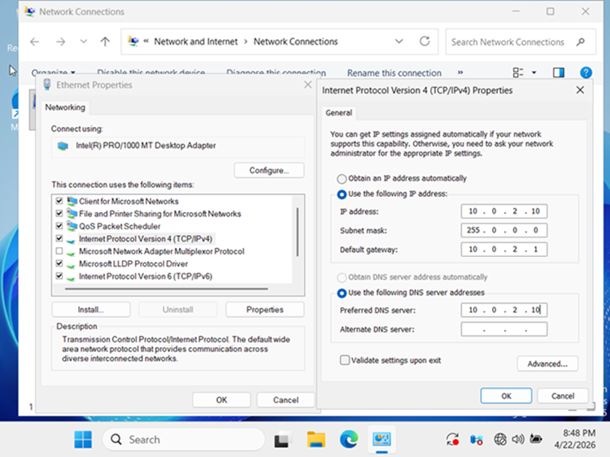
Evidence: The domain controller was configured with a static IP address, providing a stable network identity for DNS resolution, authentication, and domain controller discovery.
Implementation Area 2 — Active Directory Domain Services Installation
Task 2.1 — Select AD DS Role
In Server Manager, selected the Active Directory Domain Services role. This role provides the directory services required to create and manage a Windows domain, including authentication, authorization, and directory queries.
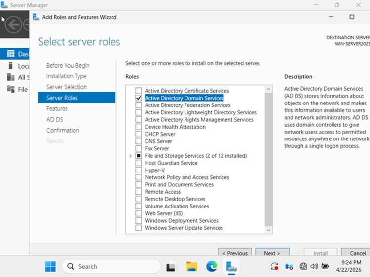
Task 2.2 — AD DS Installation Progress
The Add Roles and Features wizard installed the AD DS binaries and required components. This prepared the server for promotion to a domain controller.
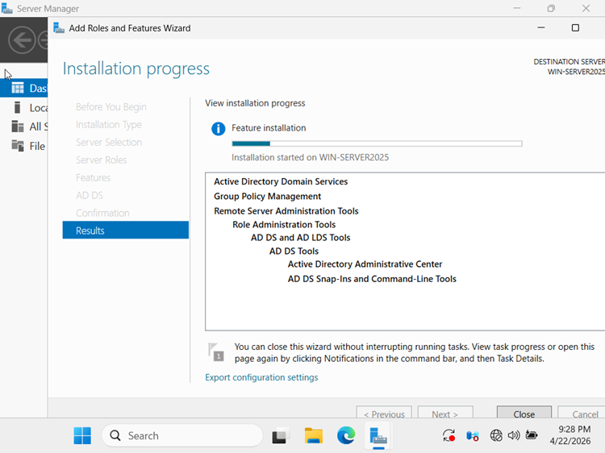
Implementation Area 3 — Domain Controller Promotion
Task 3.1 — Promote This Server to a Domain Controller
After AD DS installation, Server Manager displayed the promotion notification. Selecting “Promote this server to a domain controller” launched the AD DS Configuration Wizard.
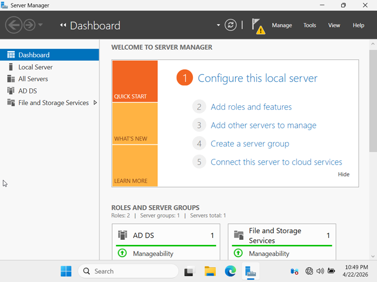
Evidence: The server was ready for domain controller promotion, moving the environment from a standalone Windows Server installation into a centralized identity platform.
Task 3.2 — Deployment Configuration: New Forest
Created a new forest by specifying the root domain name. This established the core Active Directory structure and defined the namespace for all domain objects used by SweetCrust Bakery Ltd.
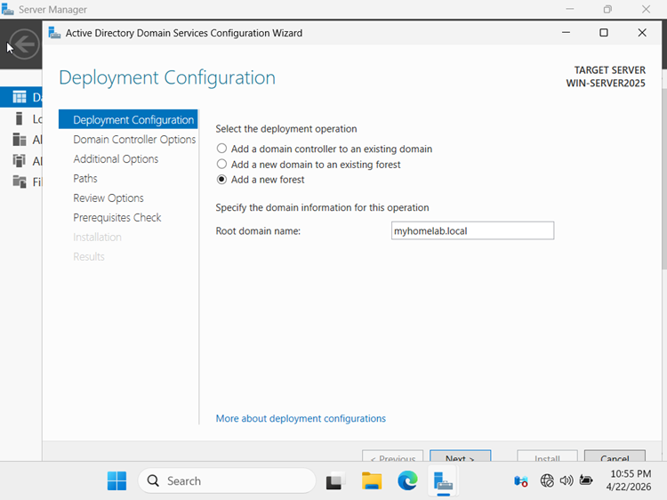
Task 3.3 — Domain Controller Options
Configured domain controller capabilities, including DNS and Global Catalog. The Directory Services Restore Mode password was configured for offline recovery scenarios.
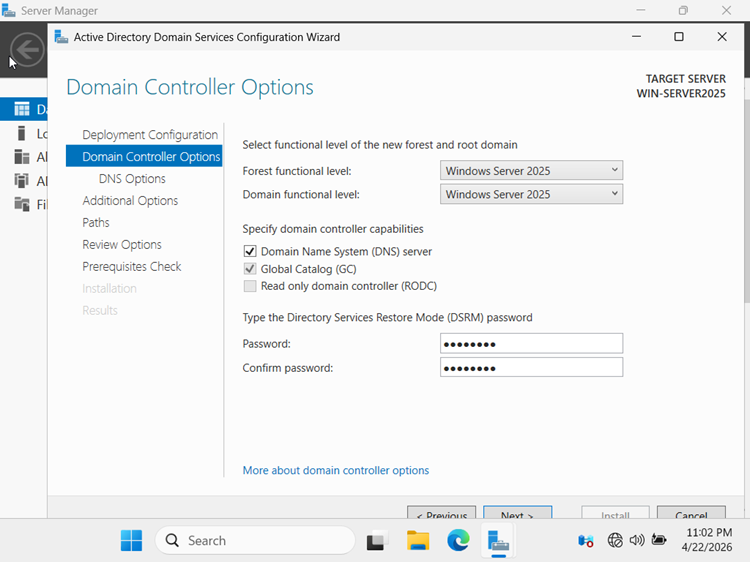
Task 3.4 — DNS Delegation
The DNS delegation page appeared during promotion. Because this was a new forest with no parent zone, the DNS delegation option remained unchecked.
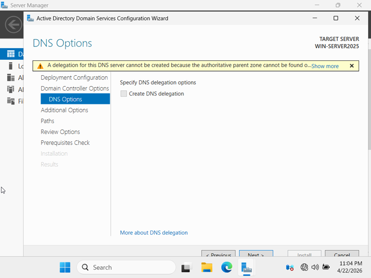
Task 3.5 — Review Options
Reviewed all configuration choices, including domain name, forest functional level, DNS installation, and Global Catalog status before starting promotion.
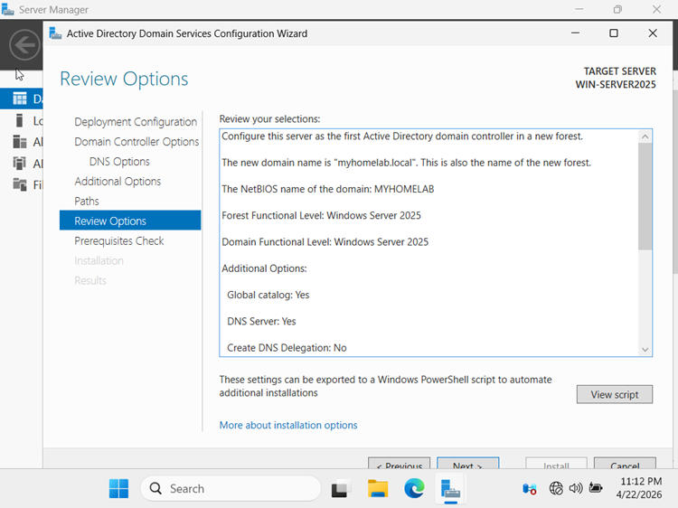
Task 3.6 — Prerequisite Check Passed
The prerequisite check validated DNS, credentials, name resolution, and configuration. All checks passed, confirming the server was ready to be promoted.
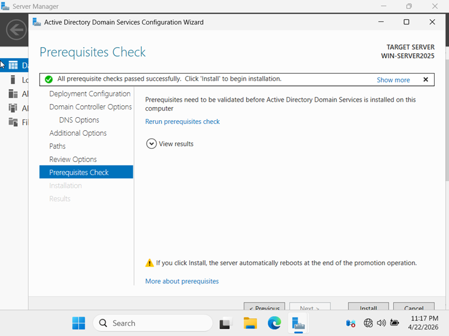
Evidence: The successful prerequisite check confirmed that the server met the technical requirements for domain controller promotion before AD DS was finalized.
Implementation Area 4 — Windows 11 Client Preparation
Task 4.1 — Configure Static IP on Windows 11
Assigned a static IPv4 address to the Windows 11 workstation and pointed the Preferred DNS server to the domain controller. This allowed the client to locate the domain controller and resolve the domain name.
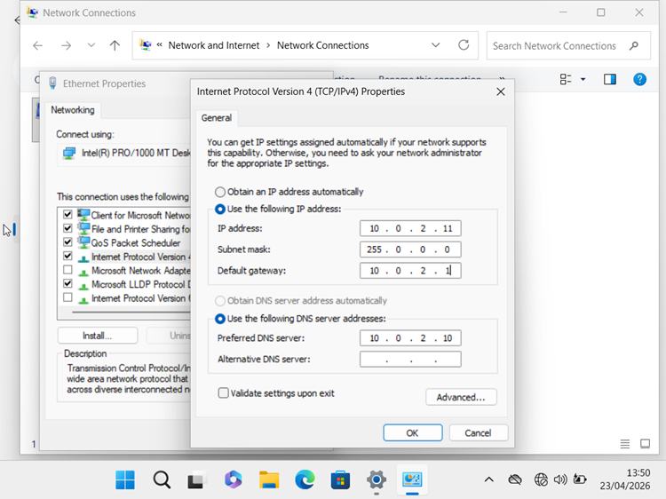
Implementation Area 5 — Delegated Administration
Task 5.1 — Created Limited User Account
Created a standard user account named John Mensah. This account was used to join Windows 11 to the domain, following least-privilege principles instead of using the built-in Administrator account.
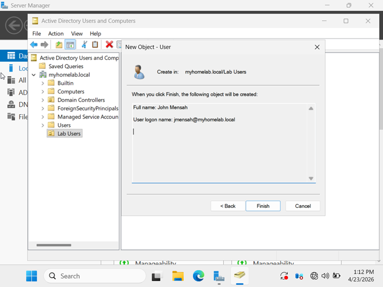
Task 5.2 — Delegation of Control Wizard
Used the Delegation of Control Wizard to grant John Mensah the ability to create and manage computer accounts in a specific OU. This demonstrated delegated administration and separation of duties.
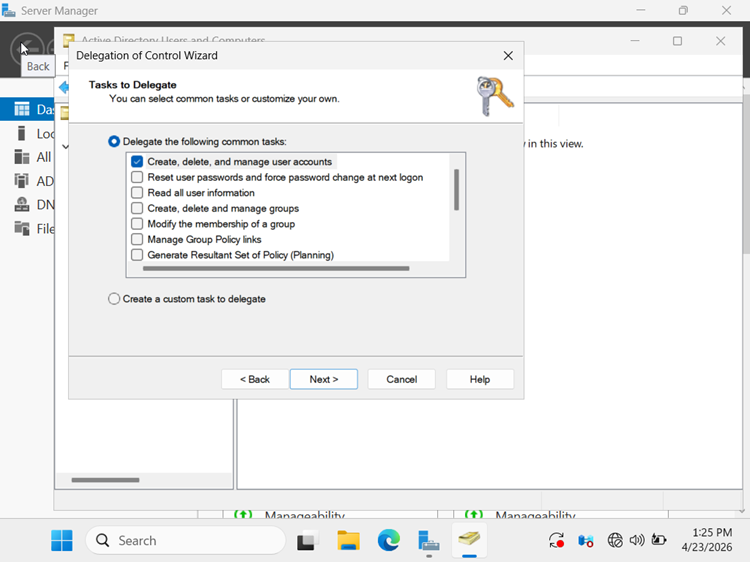
Evidence: Delegated administration was configured so a limited user could perform the domain join operation without requiring full Domain Administrator privileges.
Implementation Area 6 — Domain Join
Task 6.1 — Join Windows 11 to the Domain
Joined the Windows 11 workstation to the domain using the delegated account. The successful domain join confirmed that authentication, DNS, and domain trust were functioning correctly.
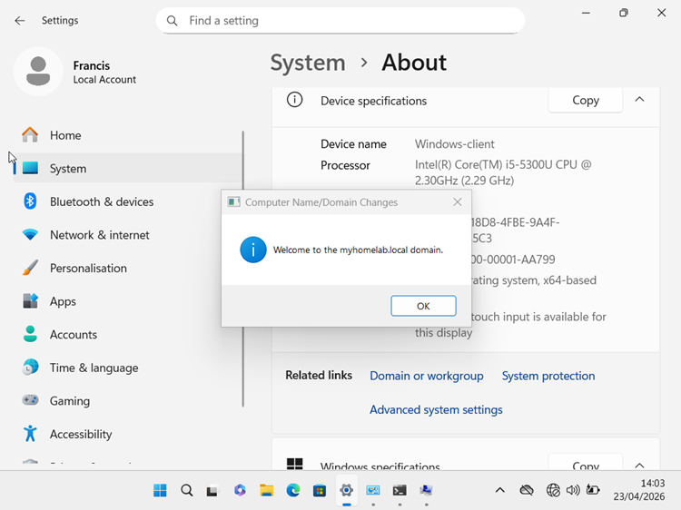
Evidence: Windows 11 successfully joined the SweetCrust Bakery domain using delegated credentials, validating DNS resolution, Active Directory communication, and domain trust functionality.
Implementation Area 7 — Post-Promotion Verification
Task 7.1 — First Login After Domain Controller Promotion
Logged into the domain controller after promotion using the domain Administrator account. This confirmed that AD DS services started correctly and that the domain controller was operational.
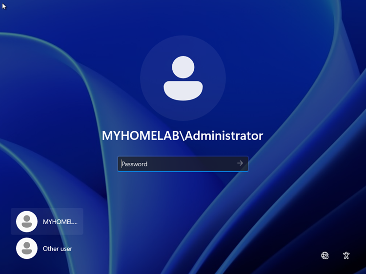
Implementation Area 8 — User Management & Group Policy Validation
Task 8.1 — Created User “Prince” in Staff OU
Created a new user account named Prince inside the Staff OU. Placing users in the correct OU supports targeted Group Policy application, permission management, and directory organization.
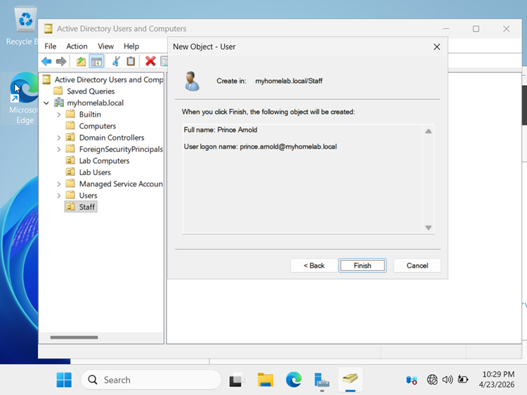
Task 8.2 — Prince’s First Login
Prince logged into the Windows 11 workstation for the first time. This confirmed that the account was created correctly, domain authentication worked, and a new domain user profile was generated.
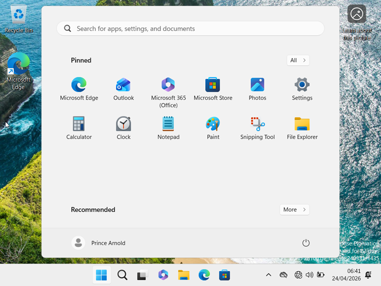
Evidence: Prince successfully authenticated against Active Directory from a domain-joined Windows 11 workstation, demonstrating centralized identity management and domain authentication.
Task 8.3 — gpupdate /force
Ran gpupdate /force to immediately refresh Group Policy settings from the domain controller.
This forced the client to retrieve the latest user and computer policy settings.
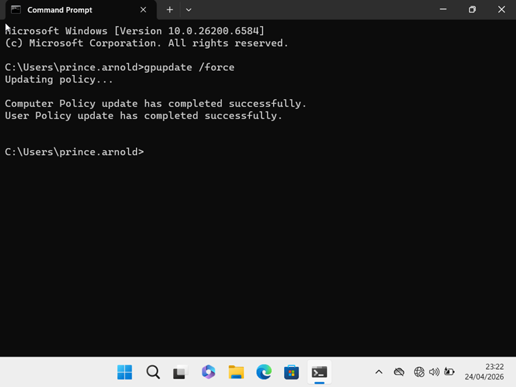
Task 8.4 — gpresult /r
Ran gpresult /r to verify which Group Policy Objects were successfully applied to the user and computer.
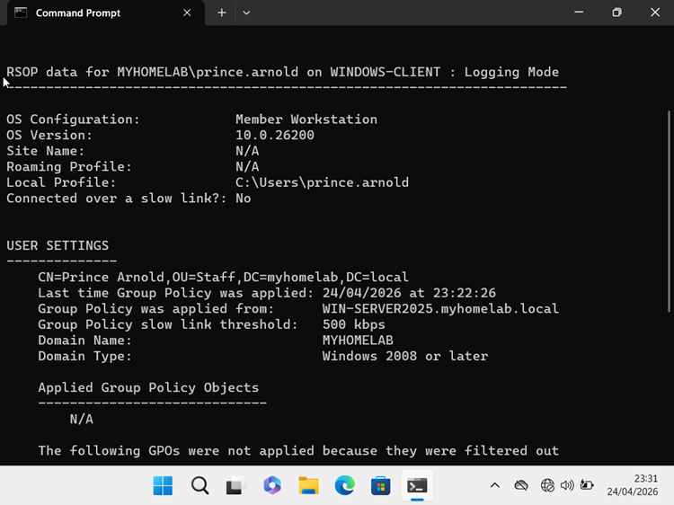
Evidence: The Group Policy result output confirmed that domain policies were applying to the workstation and user context, validating centralized configuration management.
3. Technical Evidence
Evidence captured in this phase includes Windows Server preparation, static IP configuration, AD DS installation, domain controller promotion, delegated administration, domain join, user creation, and Group Policy validation.
- Network Foundation: Static IP and DNS configuration prepared the domain controller and client for reliable name resolution.
- Directory Services: AD DS was installed and the server was promoted into a domain controller.
- Least Privilege: Delegated administration was used to avoid unnecessary Domain Administrator usage.
- Client Integration: Windows 11 was joined to the domain and authenticated successfully.
- Policy Validation: Group Policy refresh and reporting confirmed centralized policy application.
4. Validation
- Confirmed the domain controller was configured with a static IP address.
- Verified AD DS role installation and successful domain controller promotion.
- Validated DNS and domain trust by joining Windows 11 to the domain.
- Confirmed delegated domain join using a limited-permission user account.
- Verified user authentication by logging in as Prince on the domain-joined Windows 11 device.
- Confirmed Group Policy application using
gpupdate /forceandgpresult /r.
5. Phase Takeaways
- Active Directory provides centralized authentication and user management for on-premises environments.
- DNS is critical for domain join, authentication, and domain controller discovery.
- Delegated administration supports least privilege by avoiding unnecessary use of domain administrator accounts.
- Group Policy allows administrators to enforce consistent configuration across domain-joined devices.
- This phase created the identity foundation required before extending the environment into Microsoft Entra ID.